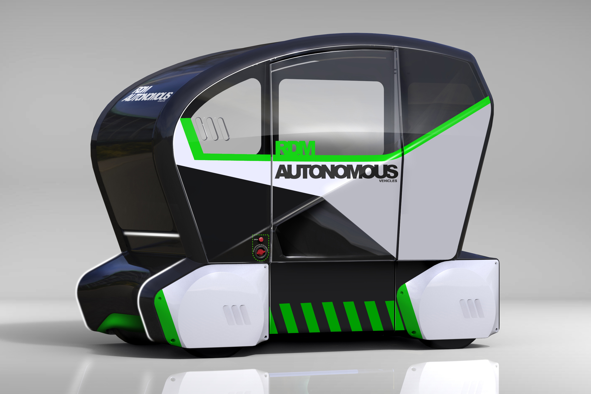

The next part of this project is our group work, and for this we were given a choice of different projects to work on. My group and I were debating between a marketing campaign for one of the United Nations 17 sustainable development goals, or to work on a live project for the RDM Group, a brand that creates driverless cars. We were at first drawn to the United Nations project, however, we had recently done an activism project which was fairly similar, and the driverless cars was an opportunity to work on a live brief for a company.
 To begin with, we started brainstorming some ideas of how we could make these driverless cars exciting to our audience. The driverless cars are going to be used for Coventry University's open day in March, so we have had to consider how we would market this. Because this is a live project, we have some time constraints (the open day is on the 28th March) so it is important to meet regularly with the group and delegate responsibilities, so we all know what we are working on.
To begin with, we started brainstorming some ideas of how we could make these driverless cars exciting to our audience. The driverless cars are going to be used for Coventry University's open day in March, so we have had to consider how we would market this. Because this is a live project, we have some time constraints (the open day is on the 28th March) so it is important to meet regularly with the group and delegate responsibilities, so we all know what we are working on.